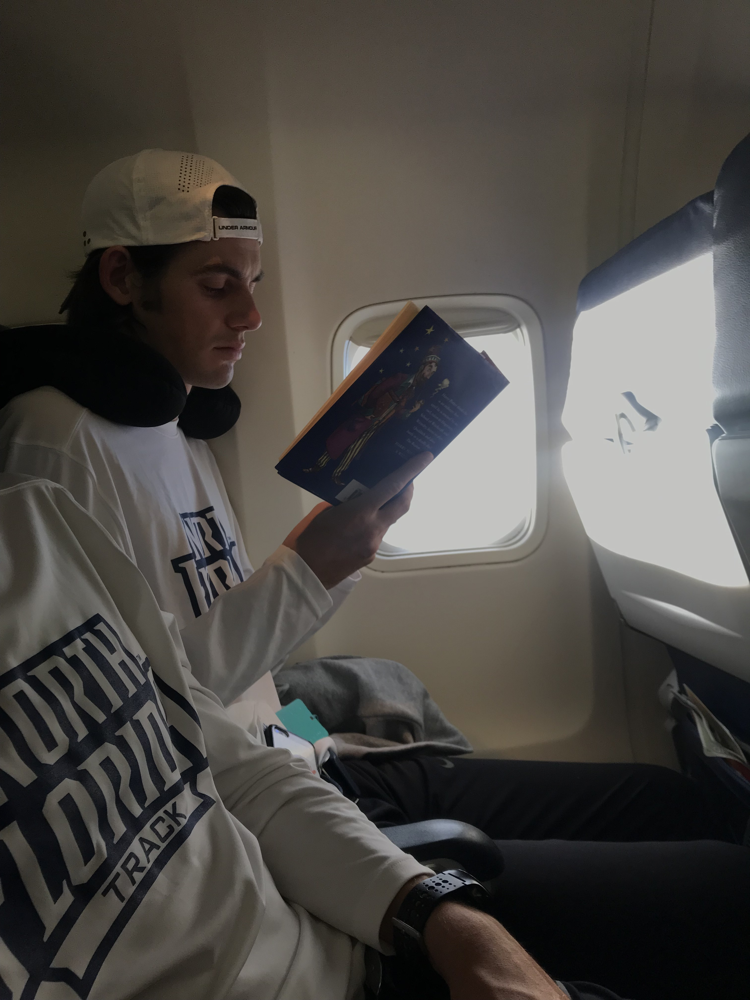

I was born on the 23rd of March 1998, in Wanganui, New Zealand. My parents are Rob and Paula Conder and I have two younger brothers, Thomas and Ben. I love my family and I am proud of where I come from because they have made me the best version of myself.
I came to the University of North Florida to be a part of the Cross-Country and Track & Field teams. Both of my parents are runners and running was instilled in me at a young age. I've been fortunate enough to visit many parts of the country and world through my running.
My favourite pass time is watching TV or movies. My favourite TV shows are Dr Who and Game of Thrones. My favourite movies are the Harry Potter Series.
I've started read novels a lot more recently. I like to read in bed and I've found that it helps me go to sleep easier. I'm currently reading Percy Jackson.
I enjoy all kinds of sports, particulary beach sports. My friends and I often spend the weekend at the beach playing football, frisbee, spikeball, or Rugby. Its always fun to play in the waves too.
I'm also into music. I played violin a lot when I was younger and now I like to play the ukelele when I'm bored.
My educational goal is to graduate from the University of North Florida in Spring
2021 with a Bachelor of Science degree, focusing on Information Science with a
minor in Leadership.
I am currently in my Junior year at the University of North Florida and I am
working hard towards this goal.
At the age of 5, I attended Durie Hill Primary School for one year. My second year of school was at Waverley Primary School. From years 3 to 8, I was a student at St. George's Prepratory School. I attended 5 years of High School at Wanganui Collegiate School.
My academic achievements: